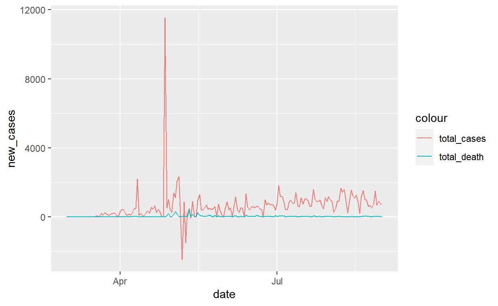

This is my work !
The coronavirus has ravaged the world for more eight months, impacting various countries. While every country impacted by COVID19 elected their own strategy to combat the global epidemic. This report will focus on the case of Ecuador, a South American country, which has an interesting trend.
In this report, data is collected from [Ourworldindata.org](Max Roser and Hasell 2020), which update data on the coronavirus pandemic daily. The data is downloaded on 1st of September, 2020. In this report, I will focus on the data of Ecuador, which contains data from 2020-01-01 to 2020-09-01. However, since the first recorded case in Ecuador was in 2020-03-01, the report will use data from that point onward.
It is worth to notice that there are negative values in cases in the data, which according to the author, happen “when a country sends a correction to the ECDC, because it had previously overestimated the number of cases/deaths. Alternatively, large changes can sometimes (although rarely) be made to a country’s entire time series if the ECDC decides (and has access to the necessary data) to correct values retrospectively.”
The data has several missing values, especially on ## Analysis
?? give information about the median age of COVID19 patience, total cases, total deaths, total cases and total deaths per million people. This table provides a broad overview of the situation of COVID 19 worldwide.
Readers can easily sort the table by clicking on the variables. On top of that, reader can search for the country that they interested in by typing in the top search bar.
Ecuador is a small South American country. It was hitted very hard by COVID in late April to early May, to the point that “bodies lied at home and in the streets of Guayaquil, Ecuador”, as reported by Whashingtonpost. However, the data presented in ?? says otherwise. Although Ecuador did not the best performed country, with death rate at 5.77%, it is not
group_by_hour[group_by_hour\(sensor_name == input\)sensor,

Packages used in this report:
plotly (Sievert 2020)
tidyverse (Wickham et al. 2019)
lubridate (Grolemund and Wickham 2011)
kableExtra (Zhu 2019)
DT (Xie, Cheng, and Tan 2020)
formattable (Ren and Russell 2016)
sparkline (Vaidyanathan, Russell, and Watts 2016)
Grolemund, Garrett, and Hadley Wickham. 2011. “Dates and Times Made Easy with lubridate.” Journal of Statistical Software 40 (3): 1–25. http://www.jstatsoft.org/v40/i03/.
Ren, Kun, and Kenton Russell. 2016. Formattable: Create ’Formattable’ Data Structures. https://CRAN.R-project.org/package=formattable.
Sievert, Carson. 2020. Interactive Web-Based Data Visualization with R, Plotly, and Shiny. Chapman; Hall/CRC. https://plotly-r.com.
Vaidyanathan, Ramnath, Kent Russell, and Gareth Watts. 2016. Sparkline: ’JQuery’ Sparkline ’Htmlwidget’. https://CRAN.R-project.org/package=sparkline.
Wickham, Hadley, Mara Averick, Jennifer Bryan, Winston Chang, Lucy D’Agostino McGowan, Romain François, Garrett Grolemund, et al. 2019. “Welcome to the tidyverse.” Journal of Open Source Software 4 (43): 1686. https://doi.org/10.21105/joss.01686.
Xie, Yihui, Joe Cheng, and Xianying Tan. 2020. DT: A Wrapper of the Javascript Library ’Datatables’. https://CRAN.R-project.org/package=DT.
Zhu, Hao. 2019. KableExtra: Construct Complex Table with ’Kable’ and Pipe Syntax. https://CRAN.R-project.org/package=kableExtra.